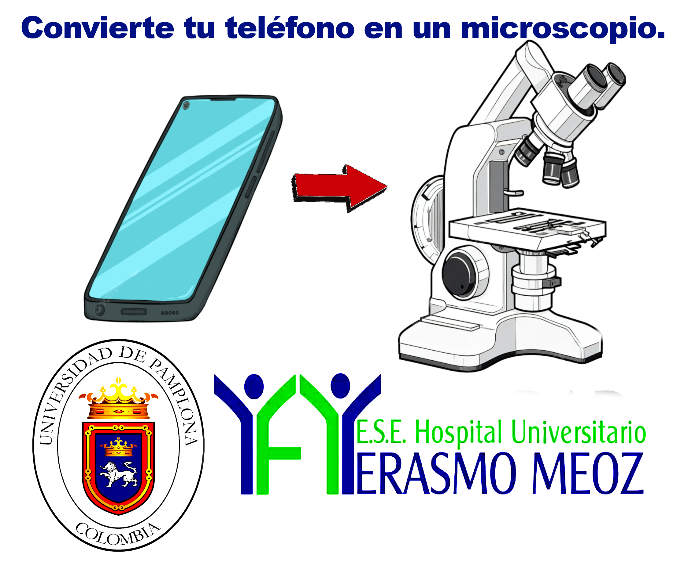

🔬
Infección de Piel
y Tejidos Blandos
Iniciando cámara AR...
← Volver
Buscando marcador...
📷 Apunta la cámara al marcador para activar el modelo 3D
↻ Rotando 90°
↻
Rotar 90°
⟳
Recalcular
Capas histológicas — toca un número
×